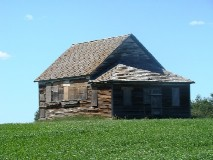

|
Otter Tail County Minnesota  Clitherall was a village originally located in section 12 of Clitherall Township of Otter Tail County, which was settled in 1865 and platted in October 1881. It was named like the lake for Major George Clitherall. Read more... |
|
Otter Tail County Minnesota The township of Girard was organized in 1881 or early in 1882. John Howard, who had arrived in Clitherall in August, 1881, circulated a petition for its organization, and the petition was granted. Various names were suggested for the new township, Harscrabble being one of them. Others suggested Andersonville, as there were seven families by the name of Anderson. But Mr. Howard liked neither of these names, so he wrote into the petition the name of "Girard," which was the name of his birthplace, Girard, Pennsylvania. Read more... |
|
Cedar County Missouri Lebeck (formerly Clair Spring) was a trading-point 17 miles north, northwest of Stockton. It was settled in 1868 by Noah Graham. Read more... |
|
Beltrami County Minnesota  Northern Township is located directly north of the City of Bemidji in northern Minnesota. The township surrounds a large portion of beautiful Lake Bemidji. Read more... |
|
Vanscoy RM Saskatchewan  The Anderson families homesteaded in Township 34 North of Range 7 West of the Third Prime Meridian. Read more... |
Victor Rozelle Anderson was born July 16, 1876 in Clitherall, Otter Tail County, Minnesota. His parents were Edwin Buckley Anderson (born July 24, 1848 in Platte City, Platte County, Missouri) and Emma Lucine Whiting (born March 8, 1853 in Silver Creek Township, Mills County, Iowa). When Victor was born, he had two older brothers, Ernest Morell age 5 and Lewis Ethan age 3. His older sister Celia Annette had died at age 9 months in 1875.
In the summer of 1877, Victor’s family temporarily moved to Becker County, Minnesota where Victor’s grandfather Buckley B. Anderson lived. In the spring of 1878, Victor’s family moved back to the Clitherall area. Victor’s father took a 158 acre homestead in Girard Township near East Battle Lake northeast of Clitherall. Victor’s father built a house on his homestead that summer.
 Old Clitherall Church Clitherall, Minnesota |
Over the next seven years, Victor’s family continued to live on the homestead, during which time three of Victor’s siblings were born, Alice Eugenie in 1879, Edwin Byron in 1881 and Bertha Frances in 1885.
In the fall of 1887, the family moved to Independence, Missouri and remained there about eighteen months. In the spring of 1888, Victor’s brother Raymond Arthur was born, and about six months later he died of poor health.
In the spring of 1889, Victor’s family moved to Lebeck, Cedar County, Missouri. Victor’s grandparents Buckley B. and Sally M. Anderson and his uncles Jedediah Richmond, Freeman Ethan and Myron Morell Anderson had recently moved there from Minnesota. Victor’s parents purchased a 40 acre farm on March 19, 1889 located about a mile southwest of Lebeck.
 Old Clitherall Store Clitherall, Minnesota |
Just before Christmas of 1889, Victor’s sister Emma Grace was born. Nearly a year later in November 1890, Victor’s grandmother Sally Marie Anderson died and was buried at Lebeck Cemetery. In 1891, Victor’s uncle Richmond Ethan and his family returned to Minnesota. In the summer of 1892, Victor’s youngest siblings, Robert Earl and Ruby Pearl were born in Lebeck.
On March 19, 1893, Victor’s parents’ house caught fire and burned to the ground. Most of their clothing and bedding and other things were burned. They moved next day into a little house a mile away. A week later, Victor took very sick with pneumonia and pleurisy combined. After being sick about a week and growing worse all the time, Victor was healed instantly through the administration of Elders G. Beebe and Jedediah Anderson.
When Victor’s mother suffered a compound dislocation of her right elbow, Victor, who was about 17 and Alice, who was 14, would each take a tub and board and work hard all one day for about six weeks to get the washing done. In the fall of 1893, Edwin was sick for a while; both twins were sick, Victor was sick again and again and was healed through the administration of the Elders.
 Edwin's Farm Lebeck, Missouri |
That fall or early part of winter, Lewis, came home on a visit and he became ill and when he got better he advised his parents to go back to Minnesota. Edwin found a chance to sell his 40 acres for $250 on February 21, 1894. The payment was mostly in horses and colts, so he rigged up two covered wagons, and on May 17, 1894, they started on a pilgrimage again to Minnesota. Ernest was still in Oklahoma, and Lewis had returned to Minnesota, so there were nine members in the Anderson family. After two weeks on the road, their five youngest children had been exposed to whooping cough. They were about six weeks on the road before they arrived in Clitherall.
The family moved into a house which was vacant, and stayed that summer and winter. Victor’s father and brothers worked at whatever their hands found to do. On February 22, 1895, they celebrated Washington’s Birthday by another house burnout. They lost lots of bedding and clothing in this fire. After these fires, their kind friends and neighbours came to their relief with many needful things, which they greatly appreciated.
On July 4, 1895, Victor’s grandfather Buckley Burnham Anderson died and was buried in Lebeck Cemetery.
 Emma Grace Anderson Victor Rozelle Anderson Cousin Jennie Anderson c1910 |
In 1897, Victor and his brother Ernest as well as their uncles Freeman and Myron had taken homesteads near Bemidji, Minnesota over 100 miles to the north. On November 1, 1897, Victor filed a Homestead Affidavit at the U. S. Land Office at Crookston, Minnesota. Victor’s homestead was located in Northern Township (identified as 153.5 acres in the northwest quarter of Section 31 of Township 147 North of Range 33 West of the Fifth Prime Meridian) in Beltrami County. Victor built a 16 by 24 foot log house and established residence on his homestead on March 15, 1898. That year he cultivated 5 acres. During the next five years, Victor added to the area cultivated, so by 1903 he cultivated 25 acres. He also built a 14 by 16 foot addition to his log house, as well as building a 18 by 30 foot log barn. Victor’s parents and their family moved to the Bemidji area in the fall of 1899 to live on Victor's homestead. Victor’s parents eventually rented 40 acres about three miles northeast of Victor’s homestead.
In the spring of 1903, Victor Anderson, his cousin Ross Anderson and his neighbour and friend John Hedeen set out with the intention of taking a homestead in Canada’s Northwest Territories near the village of Saskatoon. (Victor was only 26 years of age, but he had already had several years of experience with his homestead near Bemidji, Minnesota, where he, his parents and several other family members lived. They arrived in Saskatoon, a village (soon to be a town) of just over 500 residents, on the train from Regina. This was the third railroad they had had to use for their trip from Bemidji. They enquired about where the available homestead land was located, and made arrangements to find a suitable Western Land Grants homestead. They traveled south west along Old Bone Trail about 20 miles, and each selected a homestead in the Vanscoy area (identified as Township 34 North of Range 7 West of the Third Meridian) in the Assiniboia District of the Northwest Territories. Victor chose the NE¼ of section 22; John Hedeen chose the NW¼ of section 22 beside Victor and Ross Anderson chose SE¼ of section 28, adjacent to John.
Victor Anderson obtained entry to his homestead on June 9, 1903. He obtained three horses which permitted him to break 20 acres of his homestead and plant a crop on 10 acres that summer. In November of 1903, when he had completed his summer farming, he built a 14 by 18 foot frame house worth $200 which he moved into on November 20, 1903. He also built a log stable worth $25 to house his horses that winter.
|  Minnesota School Minnesota District Vanscoy RM, Saskatchewan |
Victor applied to finalize his Beltrami County homestead claim on August 22, 1903. Title transfer of Victor’s homestead from the U. S. Government was finalized on September 28, 1904.
After building his house, Victor returned to Minnesota for a visit that winter. While he was there, he married John Hedeen’s sister Anna on February 24, 1904. They had immigrated to the United States in 1901 with their parents John and Stena from Sweden. Victor and Anna returned immediately to their Canadian home, but she only lived a few months. Anna Anderson died on April 27, 1904 of a blind tumour or the effects of the operation by doctors to remove it. Anna Anderson was buried at age 20 April 28, 1904 at the Smithville Cemetery (block 86 ½ Lot N) west of Saskatoon.
During the growing season of 1904, Victor broke another 10 acres and planted all 30 acres. On September 28, 1904, Victor’s homestead of 153.52 acres in Minnesota was transferred to him. Around Christmas time of 1904, Victor returned to Minnesota and worked near his home all winter in the Minnesota lumberyards. Victor helped prepare the way for his father, mother, and younger members of the family to move to Canada.
A new railroad had been built near their homes. Victor chartered a car to take his parents’ stock and household effects to Canada. In April of 1905, Victor’s parents and siblings started their journey to Canada. They got to Saskatoon several days later and hired a rig to take them out to Victor’s Uncle Richard Anderson’s home.
The next Monday, Victor reached Saskatoon with the car. Victor and Victor’s brother Byron and Victor’s uncle Richard and John Hedeen all went with teams to help haul the effects and drive the cows to Edwin’s place. Edwin filed for an adjoining homestead (SE¼ of section 22). This was not the first time that Victor’s parents had followed him to a new homestead. Victor’s parents had moved to the Bemidji area about two years after Victor.
During the growing season of 1905, Victor broke another 10 acres and planted a crop on 30 acres. He continued to have three horses but added two cows.
Edwin Anderson Family c1891 Front: Edwin, Emma Grace, Emma, Alice Rear: Byron, Victor, Bertha |
In 1905 the group from Minnesota borrowed $1200 at 8% to build a one room school for their children. The Minnesota school operated as a school until 1960 when it was sold, moved and used for storage.
In August 1905, Victor met Perry Leach at church in Saskatoon. Perry was on a thresher man’s excursion, working south of Saskatoon. Perry indicated that he liked the area so Victor suggested that he homestead near Swanson just south of where Victor lived. Perry made arrangements for a homestead before returning to his home in Hamilton.
Victor naturalized on July 4, 1906. He broke another 20 acres and planted crops on all 60 acres. Victor also fenced the 60 acres at a cost of $75. Victor applied for a land patent in October 1906, and it was approved early in 1907.
On August 15, 1906, Victor sold his 153.52 acre land in Beltrami County, Minnesota to Clara Hewitt for $40.00.
Victor obtained a pre-emption entry on September 22, 1908 for NW¼ of Section 23 of Township 34 of Range 7 Wes t of the Third Meridian, a quarter section just east of his present land. Pre-emption allowed homesteaders who had met the requirements and had received their letters patent to add to their land holdings by going through the process on another homestead. That winter, Victor built a new 18 by 24 foot frame house worth $500 on this new quarter section. He moved into this new house on March 15, 1909.